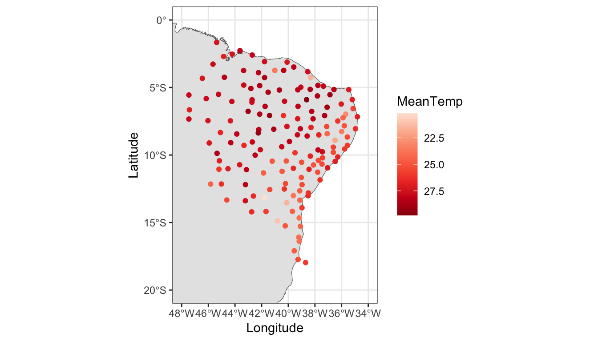
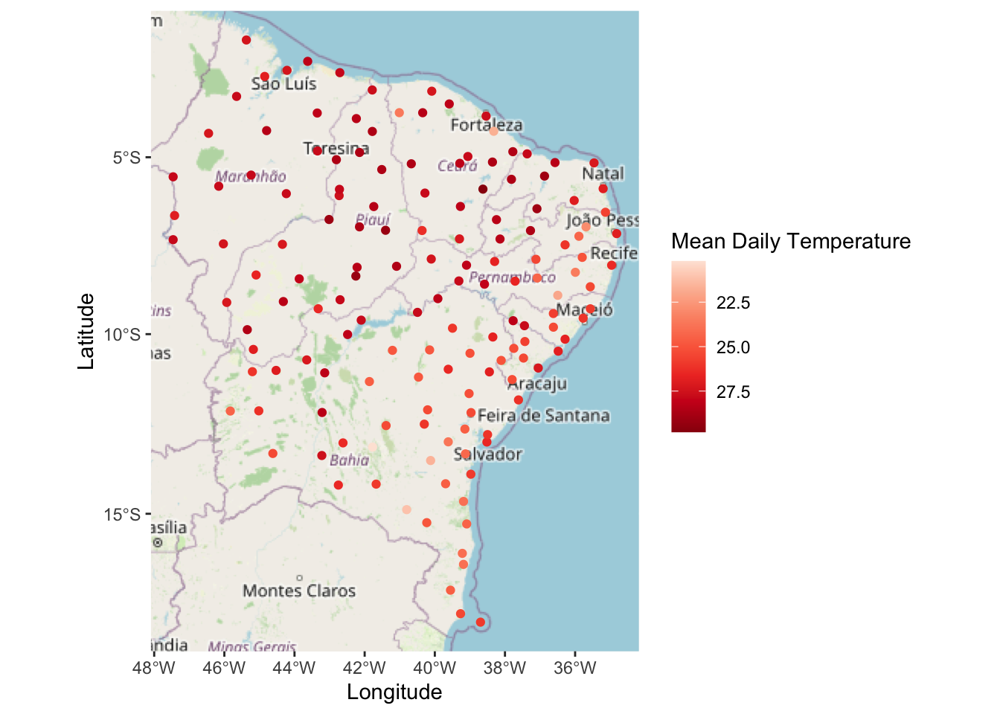
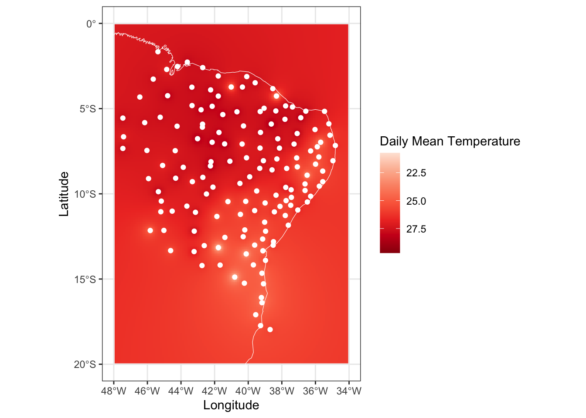
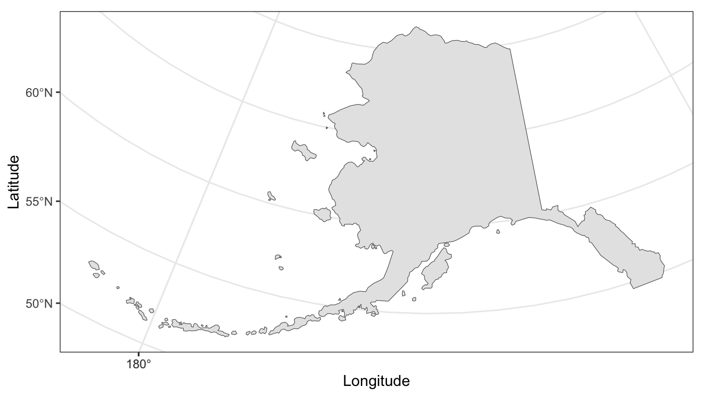
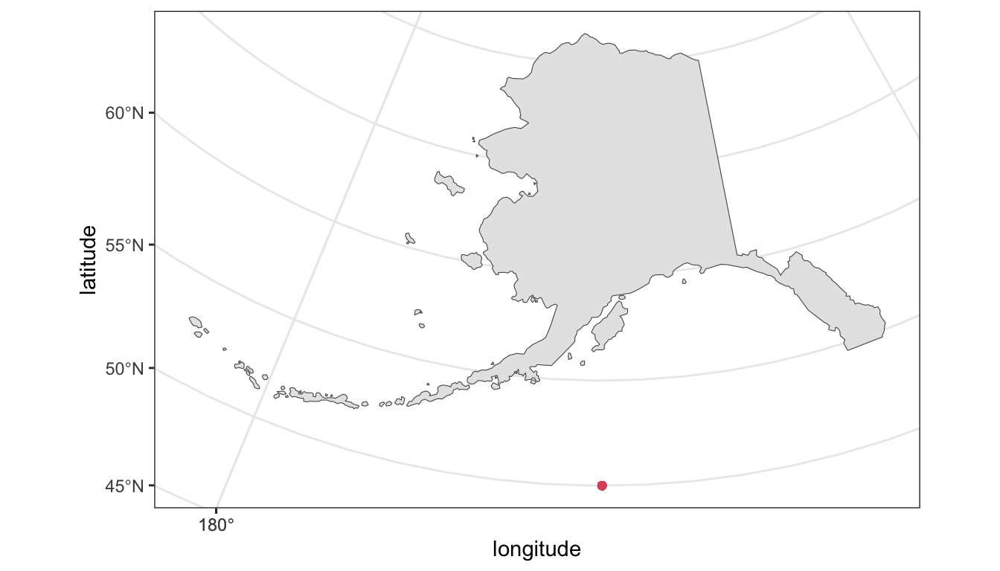
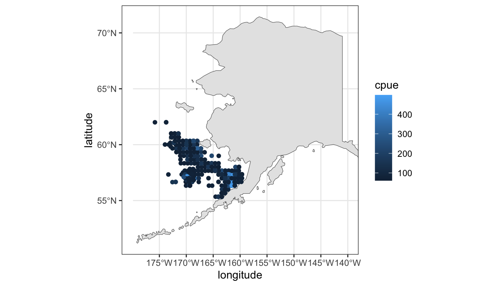
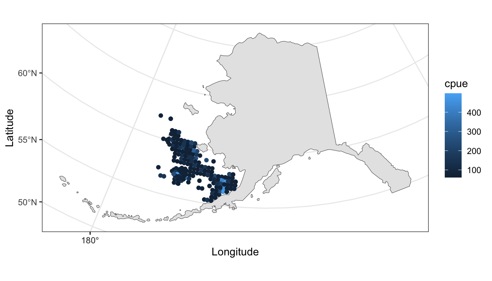

library( dplyr )
library( ggplot2 )
library( sf )
library( ggspatial )
library( prettymapr )MA22019 2025 - Solutions for Computer Lab 7
Mise en place
Lab
Solutions
You may want to load the following packages before starting the exercises:
Tutorial Question 1 - Temperature across north-eastern Brazil
The file “Brazil.csv” contains average daily temperatures between 2000 and 2021 for 149 weather stations in north-eastern Brazil. You also given a shapefile for Brazil. We want to analyze the data using the techniques for point-referenced data introduced in the lecture.
- Visualize the locations of the weather stations and average daily temperature using the provided shapefile. Use the functions xlim() and ylim() to zoom in on the area of Brazil the stations are located in.
We start by loading the shapefile and the data for the weather stations:
Brazil <- read_sf( "Shapefiles/Brazil.shp" )
Temperature <- read.csv( "data/Brazil Temperature.csv" )Using the code from Section 4.1.2 and the functions xlim() and ylim() we produce the plot as required:
ggplot( Brazil ) + geom_sf() + theme_bw() +
geom_point( data=Temperature, aes(x=Lon, y=Lat, color=MeanTemp) ) +
scale_color_distiller( palette="Reds", trans="reverse" ) +
xlim( -48, -34 ) + ylim( -20, 0 ) + labs( x="Longitude", y="Latitude" )
- Create a map with the ggspatial R package that illustrates the spatial locations of the weather stations and the recorded average daily temperatures. What do you conclude?
One option to create a map is to use the ggspatial R package, similar to Section 4.1.4 in the lecture notes:
ggplot( Temperature, aes( x=Lon, y=Lat ) ) +
annotation_map_tile( zoom=5 ) +
geom_spatial_point( aes(color=MeanTemp) ) +
scale_color_distiller( palette="Reds", trans="reverse" ) +
labs( x="Longitude", y="Latitude", color="Mean Daily Temperature" )
The plot suggests that stations in the north of the study area tend to see higher average temperatures than stations in the south. The map also indicates that locations closer to the sea have a lower average daily temperature. We also see that spatially close sites observe similar average temperatures.
- Use inverse distance weighting to predict average daily temperature across north-eastern Brazil. Make sure to choose a suitable power parameter. Comment on the reliability of our estimates.
We start by loading the IDW() function defined in Section 4.2.2 in the lecture notes:
IDW <- function( X, S, s_star, p){
d <- sqrt( (S[,1]-s_star[1])^2 + (S[,2]-s_star[2])^2 )
w <- d^(-p)
if( min(d) > 0 )
return( sum( X * w ) / sum( w ) )
else
return( X[d==0] )
}We now perform the steps as outlined in Section 4.2.3. The first step is to define a grid and to calculate the predicted values. For the choice of \(p\), we need to keep two aspects in mind: (i) the plot should look relatively smooth and (ii) the range of predicted values should be very close to the range of observed values. One value for \(p\) which satisfies these criteria is \(p=1.7\) (which we can find by trial-and-error):
lon <- seq( -48, -34, by=0.1 )
lat <- seq( -20, 0, by=0.1 )
pixels <- as.matrix( expand.grid( lon, lat ) )
Predict <- c()
coord <- cbind( Temperature$Lon, Temperature$Lat )
for( j in 1:length(pixels[,1]) )
Predict[j] <- IDW( Temperature$MeanTemp, coord, pixels[j,], p=1.7 )
IDW_predict <- data.frame( "Lon"=pixels[,1], "Lat"=pixels[,2], "Pred"=Predict )Finally, we create the map using the same steps as in the example from the lecture notes, but we have to limit the range of the longitude and latitude as in part a):
ggplot() + theme_bw() +
geom_raster( data=IDW_predict, aes(x=Lon, y=Lat, fill=Pred) ) +
scale_fill_distiller( palette="Reds", trans="reverse" ) +
geom_sf( data=Brazil, alpha=0.0, color="white" ) +
geom_point( data=Temperature, aes(x=Lon,y=Lat), color="white" ) +
xlim( -48, -34 ) + ylim( -20, 0 ) +
labs( x="Longitude", y="Latitude", fill="Daily Mean Temperature" )
The plot supports our statement in part a) that the north and centre of the region recorded higher average temperatures than the southern half.
There are two areas for which our predictions are likely to be unreliable, while the rest of predictions is probably not too bad. The first area is the sea, because the temperature dynamics will differ substantially from that on land. The second area is the left bottom corner of the map - none of the weather stations really lies close to to this area, and thus our predictions are unreliable.
Tutorial Question 2 - Alaskan horsehair crab landings
In Section 4.1.3 we covered the topic of projections. The following tasks showcase one important aspect we should keep in mind when working with projections and demonstrates how we may handle it.
The data file “Crabs.csv” contains catch per unit effort (CPUE) data of commercial horsehair crab landings for various locations across the Alaskan Eastern Bering Sea for 2010-2018. CPUE is an indirect measure of the abundance of a species. We want to visualize the data using the shapefile for Alaska:
Alaska <- read_sf( "Shapefiles/Alaska.shp" )- Create a plot of the provided shapefile. Is the WGS84 coordinate reference system being used for the plot?
We plot the shapefile as we have seen in the lecture:
ggplot( Alaska ) + geom_sf() + theme_bw() +
labs( x="Longitude", y="Latitude" )
The plot is not using the WGS84 coordinate reference system because the angles are not preserved and we have more of a sense of the area being located on a sphere.
We now want to explore the spatial data contained in “Crabs.csv”. Run the following piece of R code
Crabs <- read.csv( "data/Crabs.csv" )
ggplot( data=Alaska ) + theme_bw() + geom_sf() +
geom_point( data=Crabs, aes(x=longitude, y=latitude), colour=2 ) 
- Consider the data in “Crabs.csv” and discuss whether the map we produced is correct.
We see that there is only a single point shown in the plot. Let’s have a look at the first few data points in Crabs.csv:
Crabs %>% slice_head( n=5 ) latitude longitude year cpue
1 58.66875 -167.8607 2010 147
2 58.66721 -168.4935 2010 79
3 58.99517 -168.5485 2010 151
4 59.33637 -167.9327 2010 80
5 59.33674 -168.5728 2010 477There is clearly something wrong with the way the points have been added to the map, because the first few data points should all lie on the map.
Let’s change the projection of the shapefile with the coord_sf() and st_crs() functions covered in Section 4.1.3:
ggplot( data=Alaska ) + theme_bw() + geom_sf() +
coord_sf( crs=st_crs(4326) ) + xlim(-180,-140) +
geom_point( data=Crabs, aes(x=longitude, y=latitude) ) - Is this plot more realistic than that in part b)? Adapt the code such that the recorded CPUE is shown in the plot. What do you conclude from the plot?
We run the code and visualize CPUE using color as a visual cue:
ggplot( data=Alaska ) + theme_bw() + geom_sf() +
coord_sf( crs=st_crs(4326) ) + xlim(-180,-140) +
geom_point( data=Crabs, aes(x=longitude, y=latitude, color=cpue) ) 
The plotted locations seem correct as we used the WGS84 coordinate reference system for both the map and the points. We conclude that Alaskan horsehair crabs are usually caught between 55°N and 60°N and slightly off the coast. There are some spots with a markedly higher CPUE, but there is no clear spatial pattern. This may be due to differences across years, or other factors such as water temperature and depth.
Instead of changing the projection of the map, let’s define spatial data points using the data in “Crabs.csv”:
Crabs_map <- Crabs %>%
st_as_sf( coords = c("longitude", "latitude"), crs = "WGS84" )
ggplot( data=Alaska ) + theme_bw() + geom_sf() +
geom_sf( data=Crabs_map, aes(color=cpue) ) +
labs( x="Longitude", y="Latitude" )
- Do the locations of the points in the created plot match with the data shown in part c)? What can we learn from the considered R code about the use of projections?
The locations of the plotted data points agree with these in the previous plot.
We have seen two methods for dealing with the case when the shapefile is not using the WGS84 projection. The first one in part c) is to transform the shapefile to WGS84 format. The second option we have seen in part d) is to define spatial data points using longitude and latitude, and to let R work it out how to combine them.